Sernik
Desde 18 € / por porción o tarta
Tarta de queso polaca, cremosa y densa, horneada al estilo tradicional.
Pastelería tradicional polaca y postres de hoy, horneados cada mañana con ingredientes de proximidad.
Haz tu encargo
Todo sale de nuestro horno, sin productos semielaborados.
Tartas nupciales, cumpleaños, eventos y catering: cada encargo, pensado para tu ocasión.
Horneamos cada mañana, para que todo llegue fresco a tu mesa.
Crecí viendo a mi madre elegir cada ingrediente con cuidado, y esa manía buena se me quedó. Por eso compro cerca, de temporada, y no escondo nada detrás de un atajo industrial: lo bueno se nota en el primer bocado.
Mantequilla y derivados de la leche de verdad: naturales, sin aditivos ni variantes.
Comprada en el comercio local, según la estación y la disponibilidad de cada momento.
Harinas y huevos camperos de primera calidad, la base de cada receta.
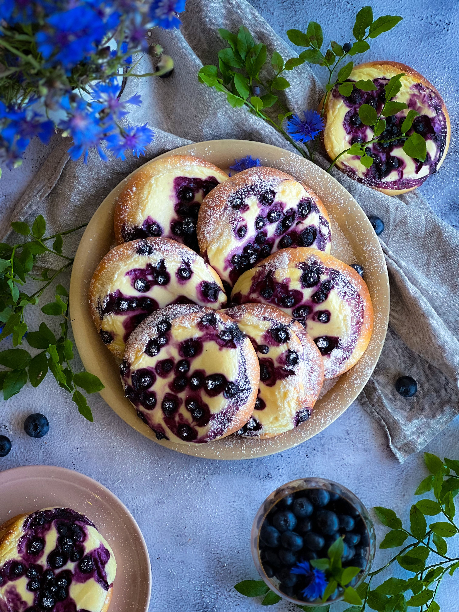
Bollos dulces de masa levada, una receta tradicional de mi Polonia natal.
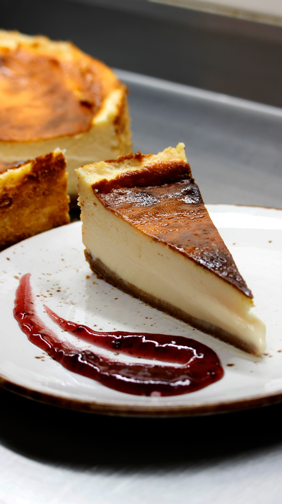
La tarta de queso polaca de siempre, cremosa y horneada lentamente.
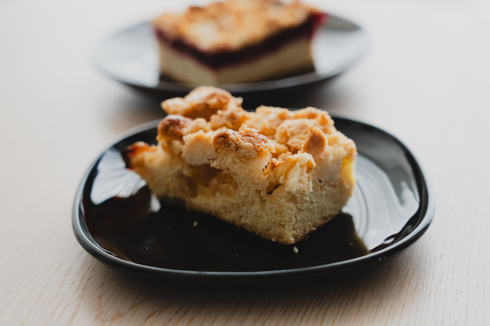
Tarta de manzana con canela, receta de generaciones.
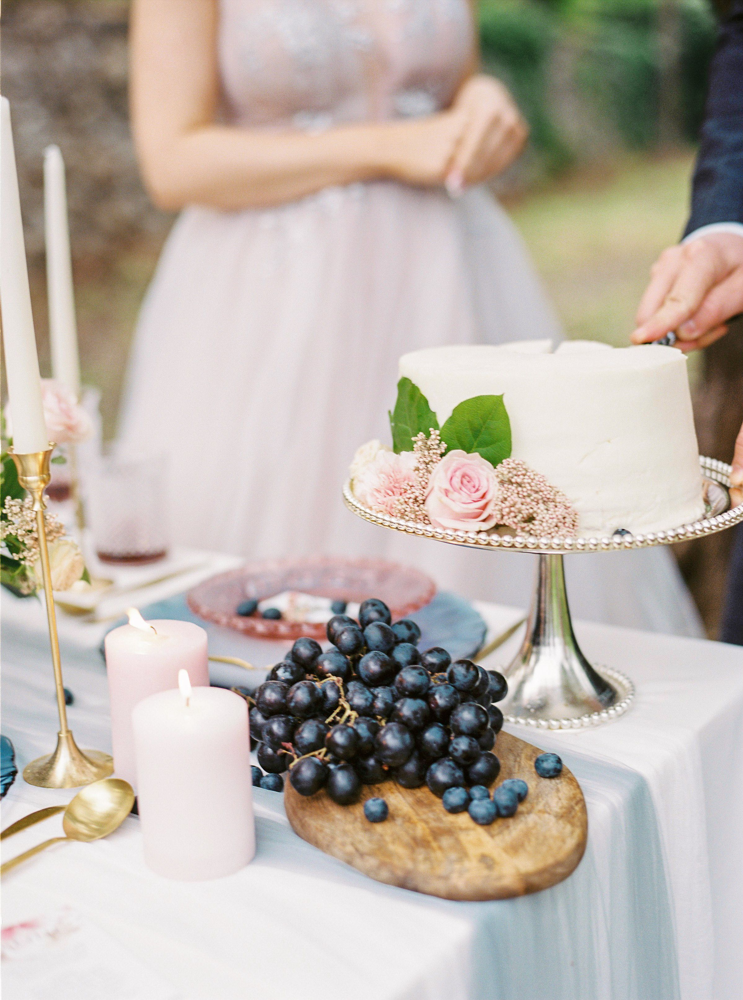
Diseños actuales para bodas, cumpleaños y celebraciones.
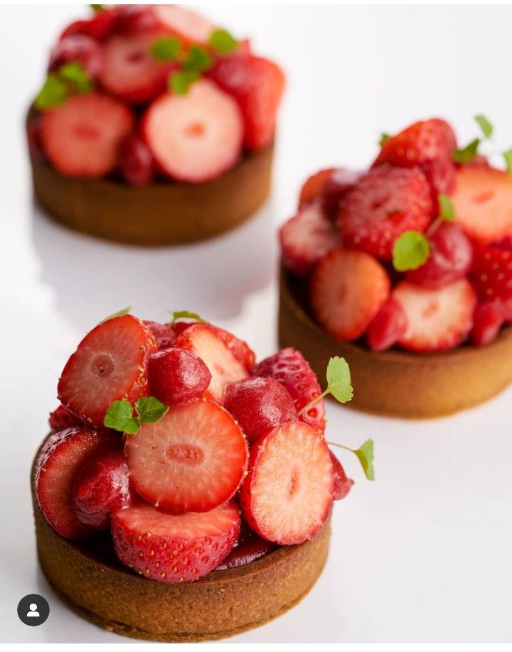
Texturas y sabores de la pastelería contemporánea.
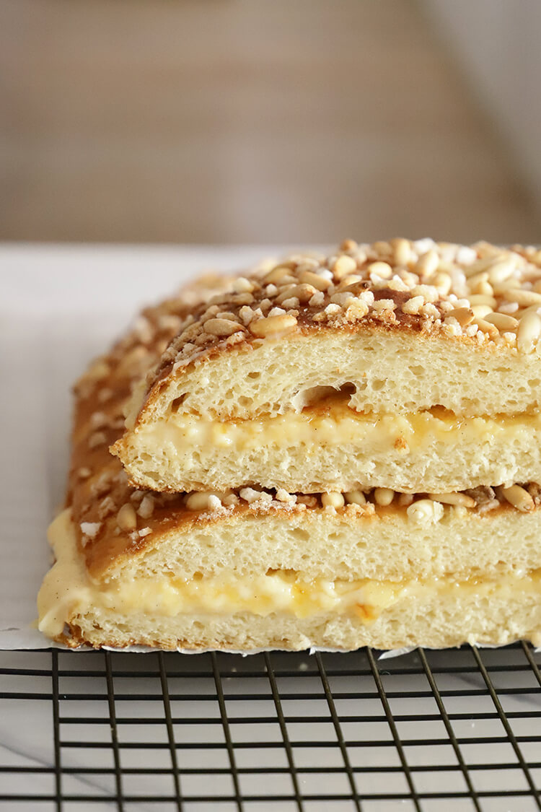
Creaciones que cambian con la fruta y las fiestas del calendario.
De niña ya horneaba con mi madre los pasteles tradicionales de mi Polonia natal. De Namysłów a Berlín, donde perfeccioné mi técnica junto a chefs de reconocimiento, y de ahí a Barcelona.
Desde 2023, en Delicias by Bea horneo cada día fusionando la pastelería tradicional polaca con las técnicas más actuales, con el mismo cariño con el que se hornea en casa.
Desde marzo de 2026 mi obrador forma parte de Les Corts, un barrio que siento ya como mi casa. Aquí me gusta el trato cercano y familiar con los vecinos: que entren a saludar, que me cuenten para qué es el dulce, que vuelvan. Esa cercanía es, para mí, parte de la receta.
Cada dulce se hornea expresamente para ti. No trabajo con producto congelado ni de stock: cuando recibo tu encargo, compro justo los ingredientes que necesito para él.
Así me aseguro de que todo llega fresco a tu mesa y, de paso, mantengo un obrador sin desperdicio. Esa pequeña espera es la diferencia entre un dulce cualquiera y uno hecho para tu ocasión.
Recetas tradicionales polacas junto a postres de actualidad. Todo artesano, horneado en el obrador de Les Corts. Los precios son orientativos: el encargo se ajusta a tamaño y ocasión.
Tarta de queso polaca, cremosa y densa, horneada al estilo tradicional.
Tarta de manzana con canela y masa quebrada, el clásico de la abuela.
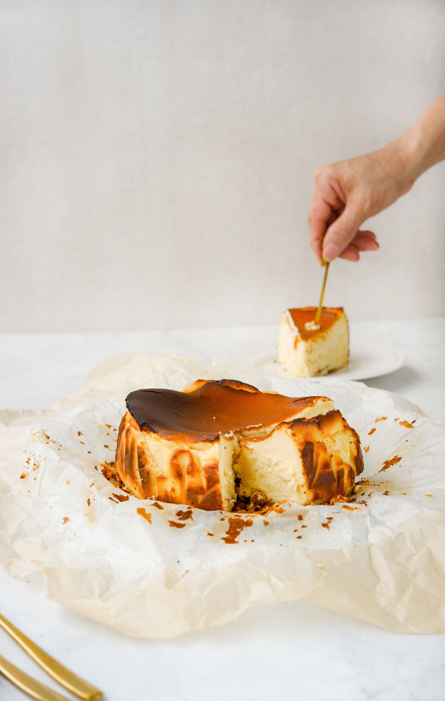
Estilo La Viña: cremosa por dentro y con la superficie tostada al horno.
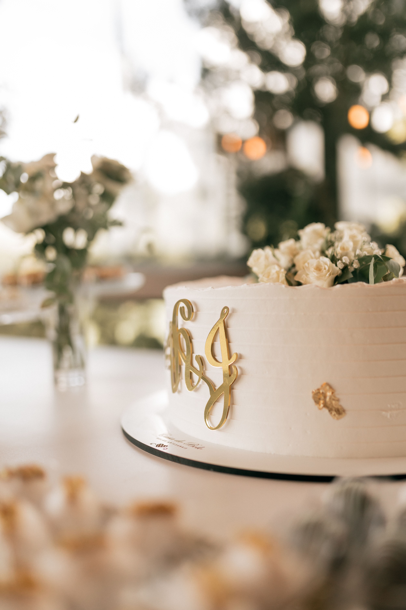
Para bodas, comuniones y cumpleaños. Diseño y sabores personalizados.
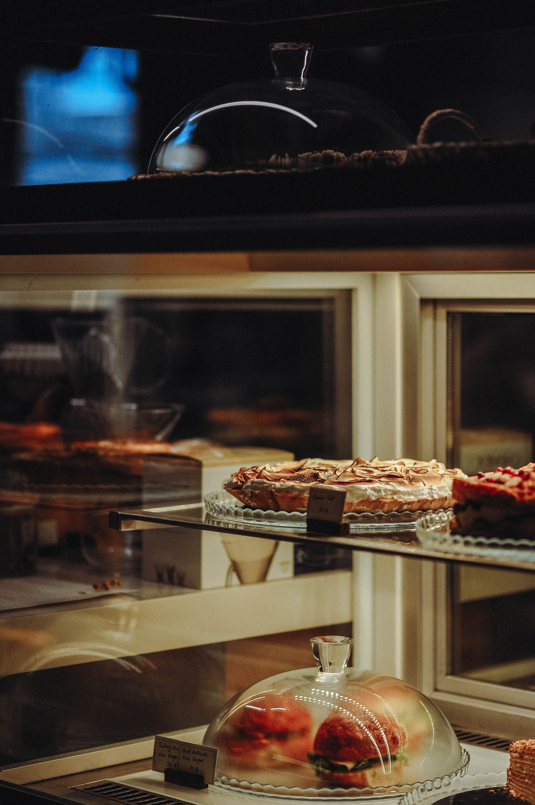
Creaciones de actualidad que cambian con la temporada. Pregunta por las del día.
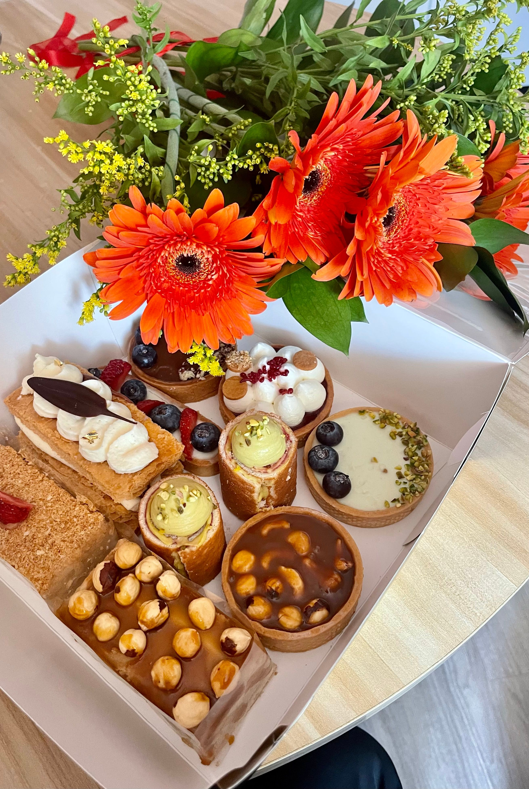
Una selección de nuestros dulces para llevar o regalar.
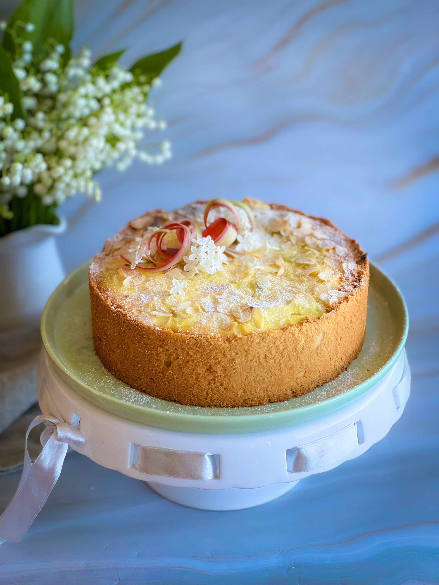
Especialidades del calendario, como la coca de Sant Joan. Pregunta por las de cada época.
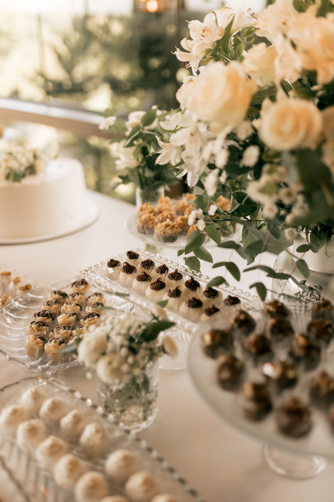
Mesas dulces y surtidos para celebraciones, empresas y eventos. Cuéntame tu ocasión y lo preparamos a medida.
Para mí es importante que puedas disfrutar de mis dulces sin preocupaciones. Por eso:
¿Tienes alguna necesidad específica? Escríbeme y lo vemos.
| Lunes | 8:30 – 15:00 |
| Martes | 8:30 – 15:00 |
| Miércoles | Cerrado |
| Jueves | 8:30 – 15:00 |
| Viernes | 8:30 – 15:00 |
| Sábado | 10:00 – 14:00 |
| Domingo | 11:00 – 14:00 |
¿Eres una empresa? También preparo encargos para eventos, reuniones y celebraciones de empresa. Cuéntamelo y lo organizamos.